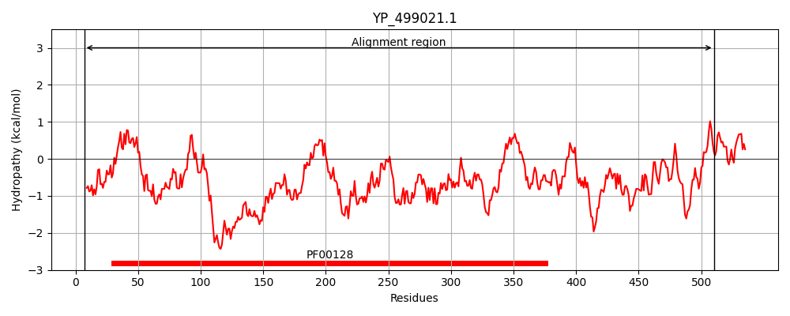
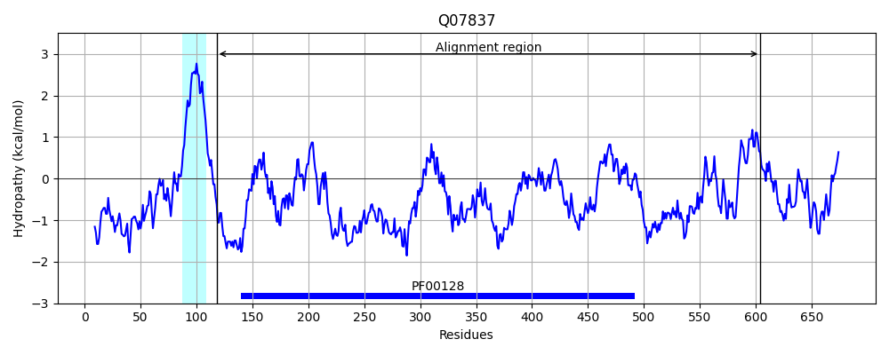
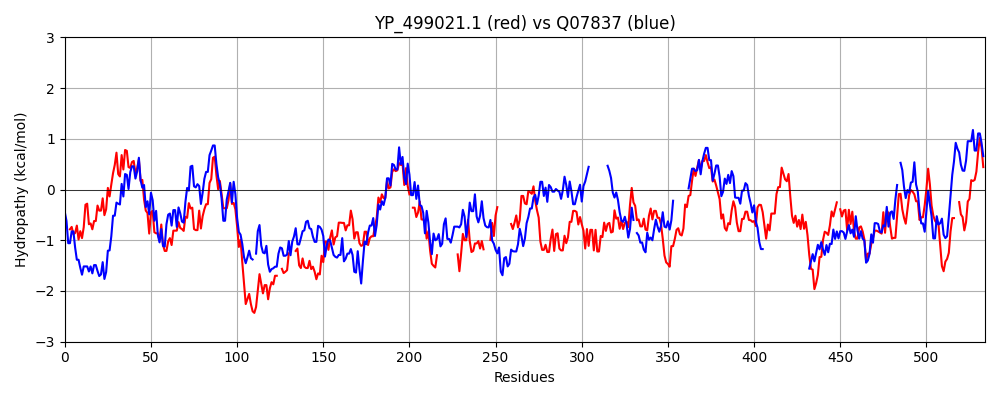

Hit Accession: Q07837
Hit TCID: 8.A.9.1.2
Hit Description: gnl|BL_ORD_ID|12308 gnl|TC-DB|Q07837|8.A.9.1.2 Neutral and basic amino acid transport protein rBAT OS=Homo sapiens GN=SLC3A1 PE=1 SV=2
Mach Len: 534
e:0.000000
Query TMS Count : 0
Hit TMS Count: 1
TMS-Overlap Score: 0.000000
Predicted Substrates:None
BLAST Alignment:
Score: 599 , Bit scores: 235 bits, E-value: 2.9e-69, Alignment length: 534, Percentage identity: 29
Query: 7 WRKSVVYQIYPKSFNDTTGNGIGDINGIIEKLDYIKLLGVDYIWLTPVYESPMNDNGYDISNYLEINEDFGTMDDFEKLIKVAHQKDLKVMLDIVINHTSTEHEWFKEARKSKDNPYRDYYFFR--SSEDG---PPTNWHSKFGGNAWKYDSETDEYYLHLFDVSQADLNWDNPEVRQSLYRIVNHWIDFGVDGFRFDVIN-LISKGEFKDSDKIGK-----------EFYTDGPRVHEFLHEL---NRQTF-------GNTDMMTIGEMSSTTIENCIKYTQPERQELNSVFNFHHLKVDYVDGEKWTNAKLDFHKLKEILMQWQRGIYDGGGWNAIFWCNHDQPRVVSRFGDDTSEEMRIQSAKMLAIALHMLQGTPYIYQGEEIGMTDPHFTSIAQYRDVESINAYHQLLSEGHAEADVLAILGQKSRDNSRTPMQWSDDVNAGFT-AGKPWIDISENYHQVNVRQALQNKESIFYTYQKLIQLRHTHDIITYGDIVPRFMDHDHLFVYERHYK--NQQWLVIANFSASAV 510
W++ +YQIYP+SF D+ +G GD+ GI +KLDYI L + +W+T Y+S + D Y + ++ E++ FGTM+DFE L+ H K LK+++D + NHTS +H WF+ +R ++ Y DYY + + E+G PP NW S +G ++W +D ++ Y H F Q DLN+ NP+V++ + I+ W+ GVDGF D + L+ +D ++ K E Y D +H++ RQT G M + + + Y P QE + FN + +D V G + + E++ W + + G W D R+ SR G+ Q ++ + L L GTP Y GEEIGM + ++ + D+ ++ S++PMQW + NAGF+ A W+ + +YH VNV S YQ L L H ++++ + H VY R ++ ++V+ NF S +
Sbjct: 118 WQEGPMYQIYPRSFKDSNKDGNGDLKGIQDKLDYITALNIKTVWITSFYKSSLKDFRYGVEDFREVDPIFGTMEDFENLVAAIHDKGLKLIIDFIPNHTSDKHIWFQLSR-TRTGKYTDYYIWHDCTHENGKTIPPNNWLSVYGNSSWHFDEVRNQCYFHQFMKEQPDLNFRNPDVQEEIKEILRFWLTKGVDGFSLDAVKFLLEAKHLRDEIQVNKTQIPDTVTQYSELYHDFTTTQVGMHDIVRSFRQTMDQYSTEPGRYRFMGTEAYAESIDRTVMYYGLPFIQEADFPFNNYLSMLDTVSG----------NSVYEVITSWMENMPE-GKWPNWMIGGPDSSRLTSRLGN--------QYVNVMNMLLFTLPGTPITYYGEEIGMGNIVAANLNESYDINTL--------------------------RSKSPMQWDNSSNAGFSEASNTWLPTNSDYHTVNVDVQKTQPRSALKLYQDL-SLLHANELLLNRGWFCHLRNDSHYVVYTRELDGIDRIFIVVLNFGESTL 604 | Protein Hydropathy Plots: |
|---|
|  |  |
Pairwise Alignment-Hydropathy Plot:
|
|---|
|  |